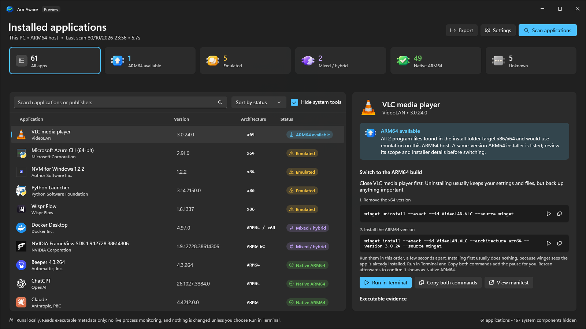
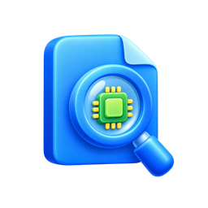
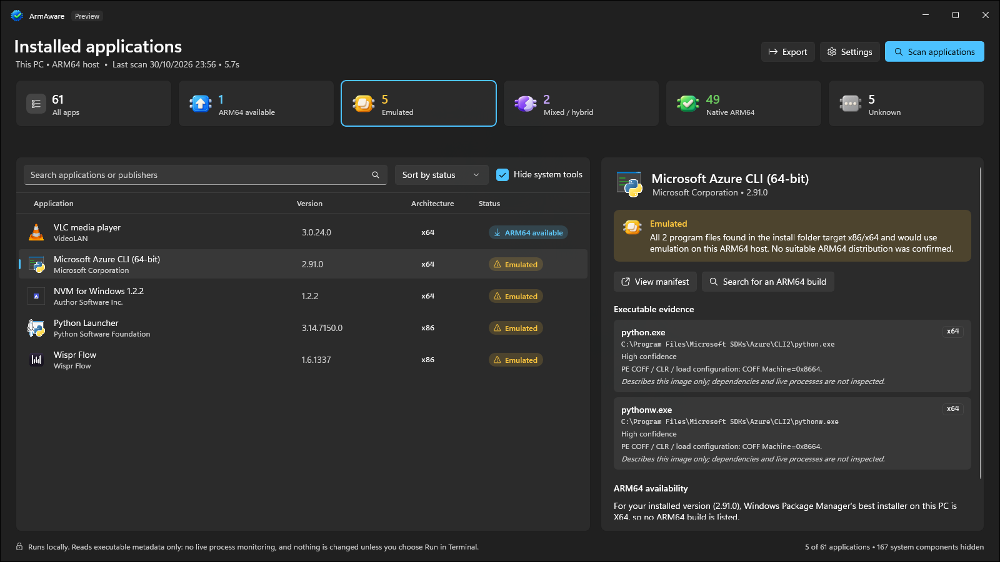
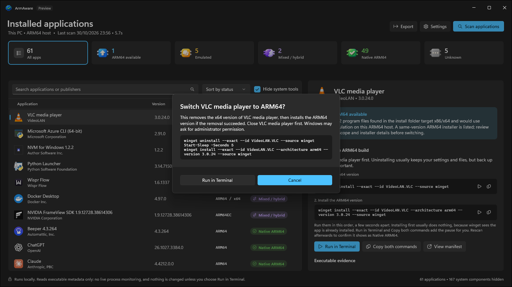
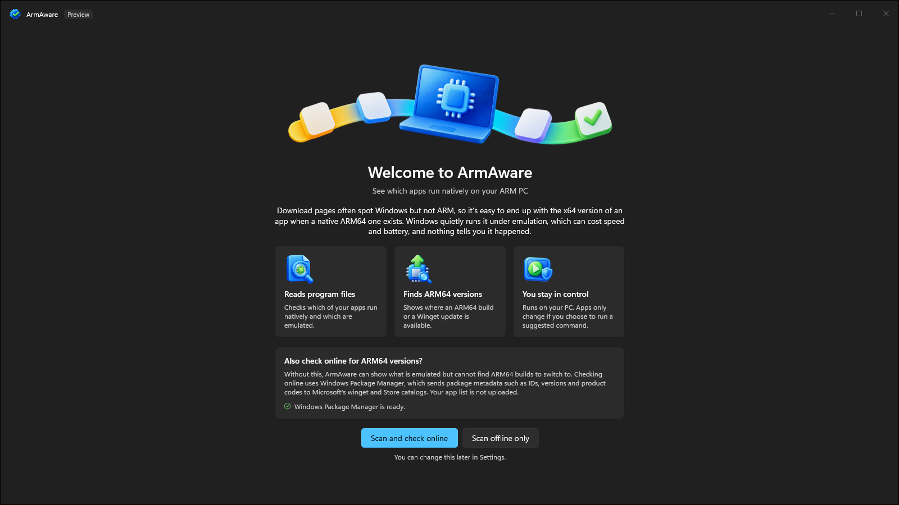

for Windows on Arm
Run your apps the native way.
ArmAware finds the apps on your PC that are quietly running under emulation, and shows you where a native ARM64 version exists.

Free and open source. Windows 11 on ARM64.

The wrong build is easy to install.
Many download pages see Windows but not your processor, so the big download button hands you the x64 installer. Windows runs it through emulation and it mostly just works, so nothing tells you. The cost is hidden: emulated apps can use more battery and feel slower than their native builds.
Evidence, not guesses.
ArmAware reads each app's own program files, so the answer comes from the app itself. When it cannot be sure, it says so.

Reads the real files
Checks the headers of each program file to see whether it is ARM64, x64, x86 or a hybrid. Files are never loaded or run.
Finds ARM64 builds
Uses Windows Package Manager to find a same-version ARM64 installer, and flags apps with a newer version available.
You stay in control
Copy the Winget commands, or run them in a visible terminal after a clear confirmation. Nothing changes until you say so.
Switch to ARM64 in two steps.
For an emulated app with a matching ARM64 installer, ArmAware gives you the exact commands for the version and scope you have installed.
A native Windows 11 app.
Built with WinUI 3, with Mica, light and dark themes and full keyboard support.
Every app, one clear answer
The status cards filter the list. Select an app to see why it got its status and what you can do about it.

See what is emulated
The evidence shows exactly which program files were inspected and what they are built for.


Confirm before anything runs
Run in Terminal shows the full script first, then runs it where you can watch every step.


Spot Winget updates too
Apps with a newer version in the Winget catalog are flagged, with the upgrade command ready to copy or run.

A friendly start
The welcome screen explains what ArmAware does and checks that Windows Package Manager is ready.


Your apps stay your business.
No account, no telemetry, no backend. Read the full privacy policy.
Runs on your PC
Scans are local and offline by default. No inventory is ever uploaded.
Optional online checks
Off unless you turn them on. Windows Package Manager then asks Microsoft's Winget and Store catalogs about the packages you have installed.
Nothing changes by itself
Apps are only installed or removed when you confirm a command.